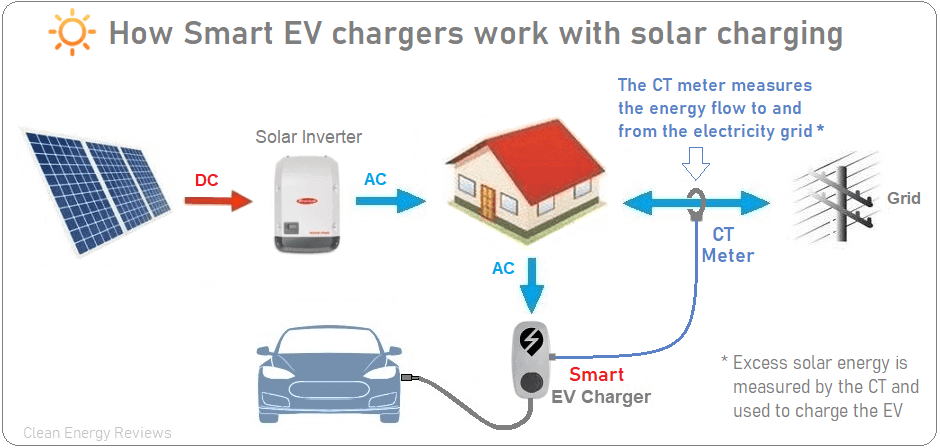
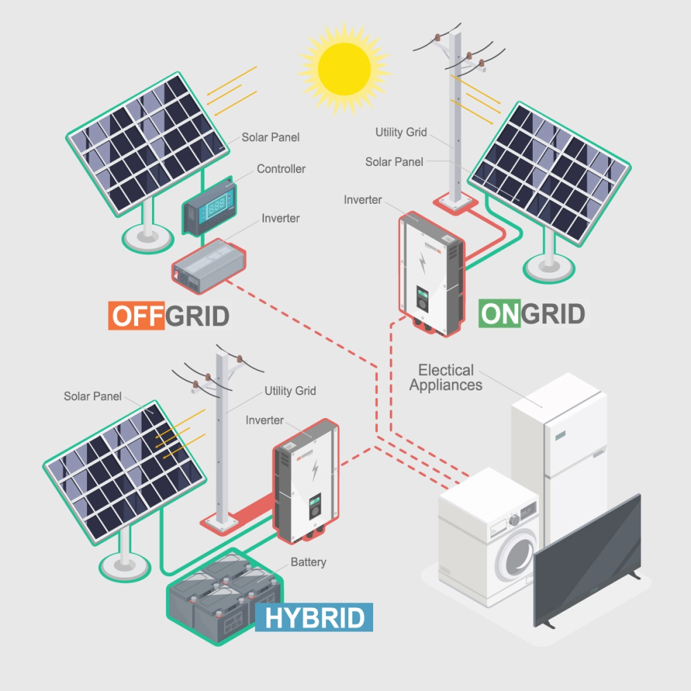
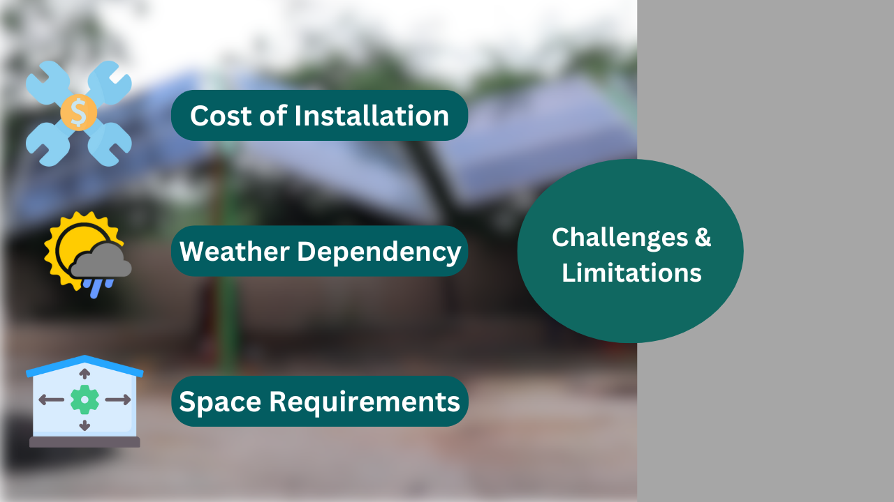
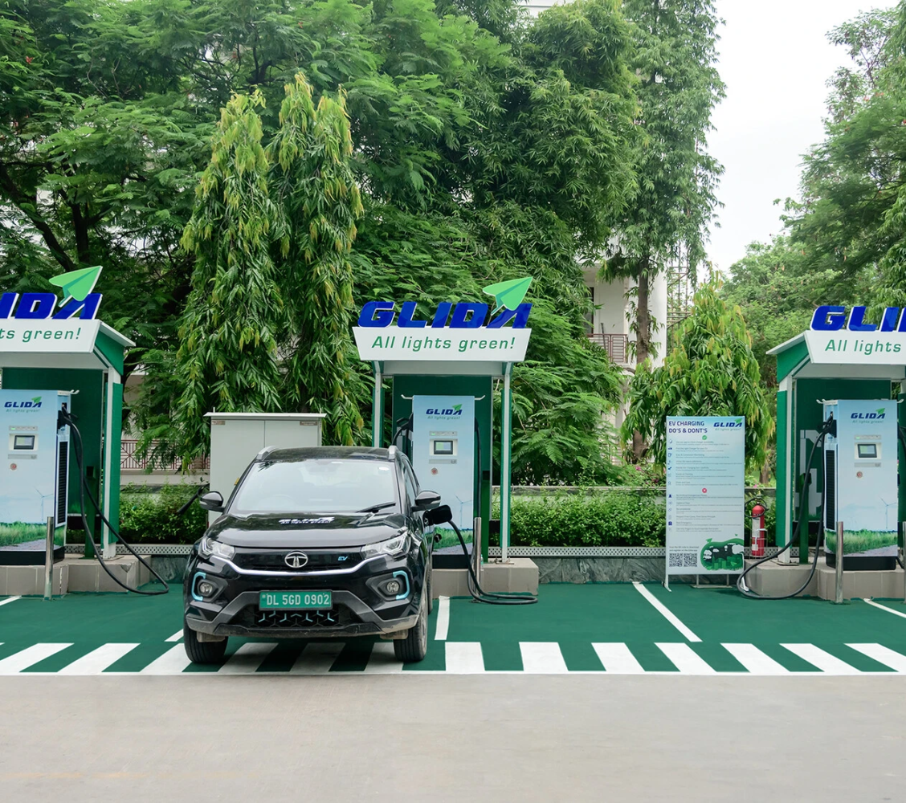
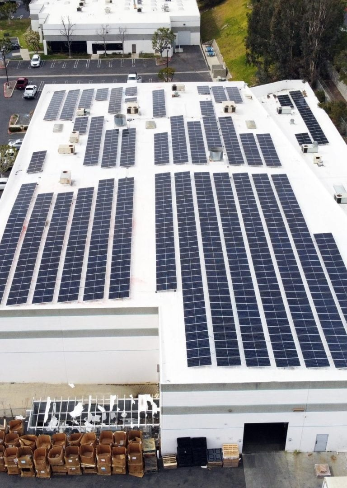

Introduction
The electric vehicle (EV) revolution is gaining momentum globally, and India is no exception. However, the challenge of sustainable energy for EV charging remains. Integrating solar power with EV charging stations offers a compelling solution that can mitigate carbon emissions and reduce reliance on the grid. This article will explore how solar-powered EV charging stations are emerging as a key driver of green energy, with a special focus on India's case studies, innovations, and future outlook.
The Growing Demand for Electric Vehicles
The EV market in India is expanding rapidly as the government pushes for the electrification of transportation. With the ambition to have 30% of vehicles powered by electricity by 2030, India is working to address the challenges of EV infrastructure, including the need for a reliable and sustainable energy source. Solar-powered EV charging stations present a powerful alternative to traditional grid-powered systems, especially in a country with abundant sunlight.
Benefits of Solar-Powered EV Charging Stations
Cost Savings for Users and Businesses
In India, where electricity prices can vary greatly, solar-powered charging stations can help reduce operational costs. Solar energy is free once the infrastructure is set up, and in the long run, it provides a more cost-effective solution for both users and businesses operating EV stations.
Environmental Impact
Solar-powered EV charging stations help India in its efforts to cut down on carbon emissions. By reducing reliance on coal-fired power plants for electricity, solar energy ensures that even the process of charging an electric vehicle is green.
How Solar Panels Work with EV Chargers

Solar panels in India operate similarly to those in any other part of the world. Sunlight is captured by photovoltaic (PV) cells and converted into electricity. This electricity can either be stored in batteries or used directly to charge EVs. Many solar-powered stations in India also incorporate hybrid systems that allow them to draw from the grid when sunlight is insufficient, ensuring consistent charging availability.
Types of Solar-Powered Charging Stations

Grid-Tied Systems
India's vast and diverse geography makes grid-tied systems ideal for cities where electricity infrastructure is already established. Solar power is used during sunny hours, while grid power can be drawn upon as a backup. This ensures that charging stations are operational round the clock.
Off-Grid Systems
In remote areas of India, where grid access is limited or unreliable, off-grid solar-powered charging stations are crucial. These systems rely entirely on solar energy and battery storage, making them ideal for rural regions with limited infrastructure.
Hybrid Systems
Hybrid systems combine both grid-tied and off-grid models. These are especially useful in India's urban areas, where demand is high, and the reliability of power supply is essential. Hybrid stations can switch between solar energy and grid electricity as needed.
Challenges and Limitations

Cost of Installation
In India, while solar technology has become more affordable over the years, the initial setup costs for solar-powered EV charging stations can still be a barrier for many businesses. However, government subsidies and incentives are helping to mitigate this challenge.
Weather Dependency
Though India enjoys abundant sunshine, the monsoon season and cloudy days can limit the efficiency of solar-powered stations. This is why many systems incorporate battery storage or hybrid models to ensure uninterrupted operation.
Space Requirements
Space constraints, particularly in densely populated urban areas, can pose a challenge for solar panel installation. Innovative designs, such as rooftop solar panels, are helping to overcome this limitation.
Innovations in Solar-Powered Charging Technology
India is seeing innovations such as AI-driven smart charging stations that optimize energy use and forecast demand based on weather patterns. Battery storage solutions are also evolving, with more efficient systems being developed to store excess solar energy for use during cloudy periods or at night.
Case Studies: Successful Integration Examples
California’s Solar-Powered EV Stations
In California, the integration of solar power into EV infrastructure has seen great success. The state's progressive policies and abundant sunshine have made it a global leader in renewable energy solutions for electric vehicles.
European Cities Leading the Way
Norway and Germany have also embraced solar-powered charging, with numerous stations powered entirely by renewable energy. These countries provide a roadmap for how India can further scale up its solar charging infrastructure.
India’s First Solar-Powered EV Charging Station
India’s first solar-powered EV charging station was inaugurated in 2019 in Gurugram by Fortum India . This station uses solar power to charge electric vehicles during the day and feeds any surplus energy back into the grid. It has set a precedent for other regions to follow, demonstrating how India can leverage its solar potential for EV charging.

Maharashtra’s Solar-Powered EV Stations
In Maharashtra, a public-private partnership has led to the installation of several solar-powered EV charging stations across the state. These stations are part of India's broader strategy to expand its EV infrastructure while promoting green energy. With abundant sunshine, Maharashtra is well-positioned to adopt solar energy solutions.
Karnataka's Solar-Powered Charging Plans
Karnataka, one of the leaders in India’s renewable energy sector, has introduced solar-powered charging stations in cities like Bengaluru. These stations are part of the state’s larger effort to encourage EV adoption and promote clean energy.
Government Policies and Incentives
The Indian government is actively promoting the adoption of solar-powered EV charging stations through various policies and incentives. Under the Faster Adoption and Manufacturing of Hybrid and Electric Vehicles (FAME) scheme, businesses and individuals installing EV charging infrastructure can benefit from subsidies. Additionally, the Ministry of New and Renewable Energy (MNRE) offers grants and tax incentives for the adoption of solar power.
The Future of Solar-Powered EV Charging
As India continues to innovate in the renewable energy space, solar-powered EV charging stations will likely become a standard part of the country’s transportation infrastructure. With continued advancements in battery storage and solar technology, India is poised to be a global leader in sustainable EV charging solutions.
How Businesses Can Benefit from Solar-Powered Charging Stations
For Indian businesses, investing in solar-powered EV charging stations not only reduces electricity costs but also enhances their brand image as sustainability leaders. As consumers become more environmentally conscious, companies that adopt green energy solutions will find themselves at a competitive advantage.

Impact on Energy Grids and Decentralized Power
By integrating solar power into the EV charging network, India can reduce the strain on its energy grids, which are often overburdened by high demand. Decentralized solar power generation also ensures a more resilient and reliable energy supply, particularly in rural areas.
Environmental Impact of Solar Integration
India’s commitment to reducing carbon emissions will greatly benefit from the adoption of solar-powered EV stations. These stations minimize reliance on fossil fuels and significantly cut greenhouse gas emissions, contributing to India's larger environmental goals.
Conclusion
The integration of solar power with electric vehicle charging stations is not only a technological innovation but also a vital step towards building a sustainable future in India. With government support, evolving technology, and successful case studies from regions like Gurugram and Maharashtra, solar-powered EV stations are paving the way for a cleaner, greener India. As electric vehicle adoption continues to grow, the reliance on solar energy will ensure that India's transportation sector moves toward a truly zero-emission future.